CS184 Spring 2026 Homework 2 Write-Up
Name: Noah Math
Link to webpage: cal-cs184-student.github.io/hw-webpages-D0ctorB/
Link to GitHub repository: github.com/cal-cs184-student/hw-webpages-D0ctorB
Overview
In this assignment, I explored the mathematical, visual, and programmatic foundations of 3D geometric modeling. The project combined two sections, the second building upon the first: smooth parametric curves/surfaces and discrete polygon meshes. In Section I, I implemented de Casteljau's algorithm to evaluate recursively 1-dimensional Bezier curves, and extended it to evaluate 2D Bezier surfaces. In Section II, I worked directly with the half-edge data structure to manipulate triangle meshes. Next, I implemented algorithms for computing area-weighted vertex normals in order to achieve smooth Phong shading, and I built the low-level topological mesh operations of edge flips and edge splits. In the final part (6), I combined the local operations of the previous parts to implement a global Loop Subdivision algorithm. The end result enables the upsampling of coarse meshes into high-resolution and smooth approximations.
The most interesting takeaway from this homework was my understanding of how simplistic yet powerful the half-edge data structure is. It required me to keep a visual map of the mesh topology I was working with in my mind, and referring to the edge traversal methods and brushing up on C++ pointer management was imperative. Most of all, it was satisfying to see how intricate and beautiful meshes all trace back to thousands of copies of the same half-edge structure!
Section I: Bezier Curves and Surfaces
Part 1: Bezier curves with 1D de Casteljau subdivision
De Casteljau's algorithm is a recursive mathematical procedure used to evaluate Bezier curves. Given a set of $n$ control points and a parameter $t$ (where $0 \leq t \leq 1$), the algorithm computes $n-1$ intermediate control points by linearly interpolating between adjacent points. The linear interpolation formula is defined as $p'_i = (1-t)p_i + t p_{i+1}$. By applying this recursive interpolation step on the newly generated points, the total number of points decreases by one at each level. When exactly one point remains, that point is guaranteed to lie exactly on the continuous Bezier curve evaluated at the parameter $t$.
I implemented this in BezierCurve::evaluateStep by iterating through the current vector of 2D points, computing the linearly interpolated position between index i and i+1 using the member variable t, and pushing the result into a new std::vector representing the next subdivision level.
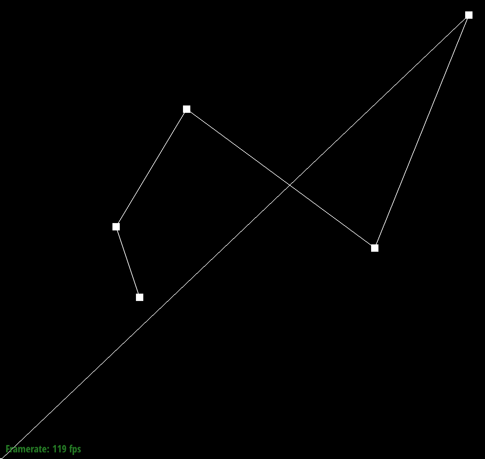
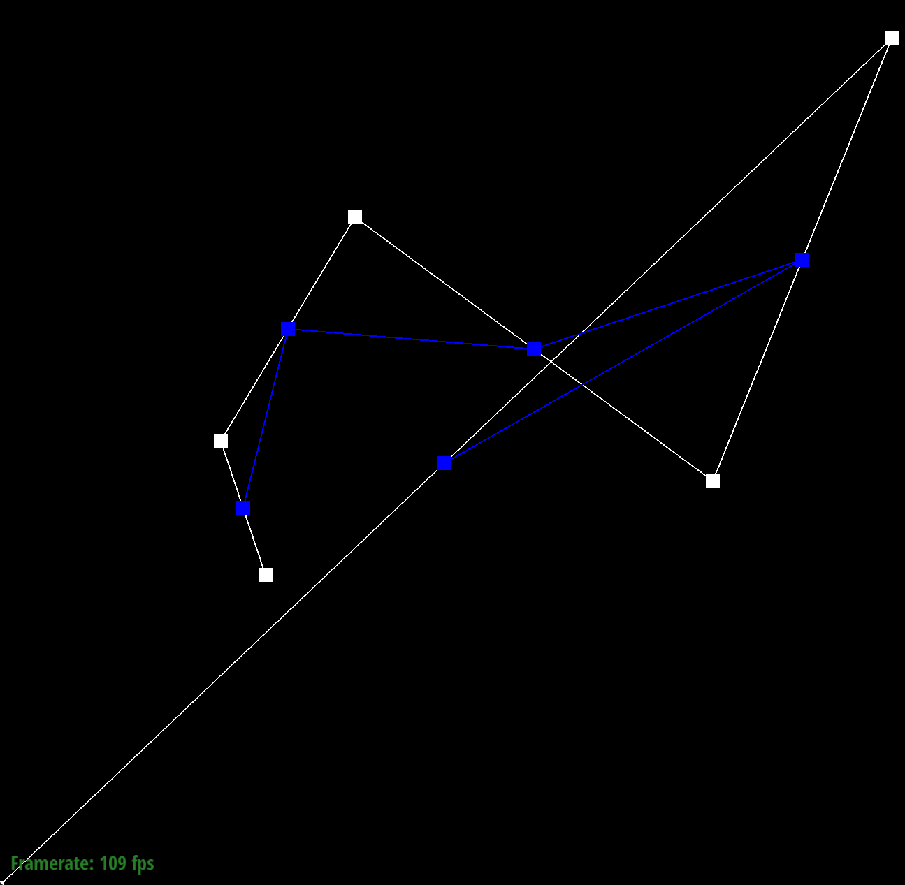
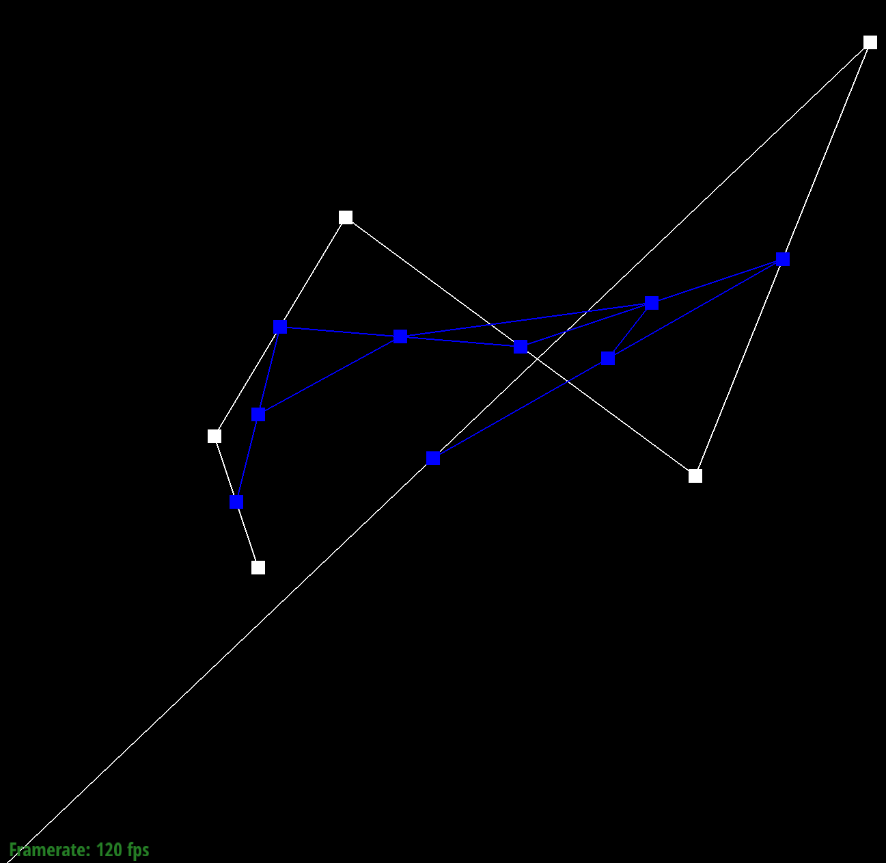
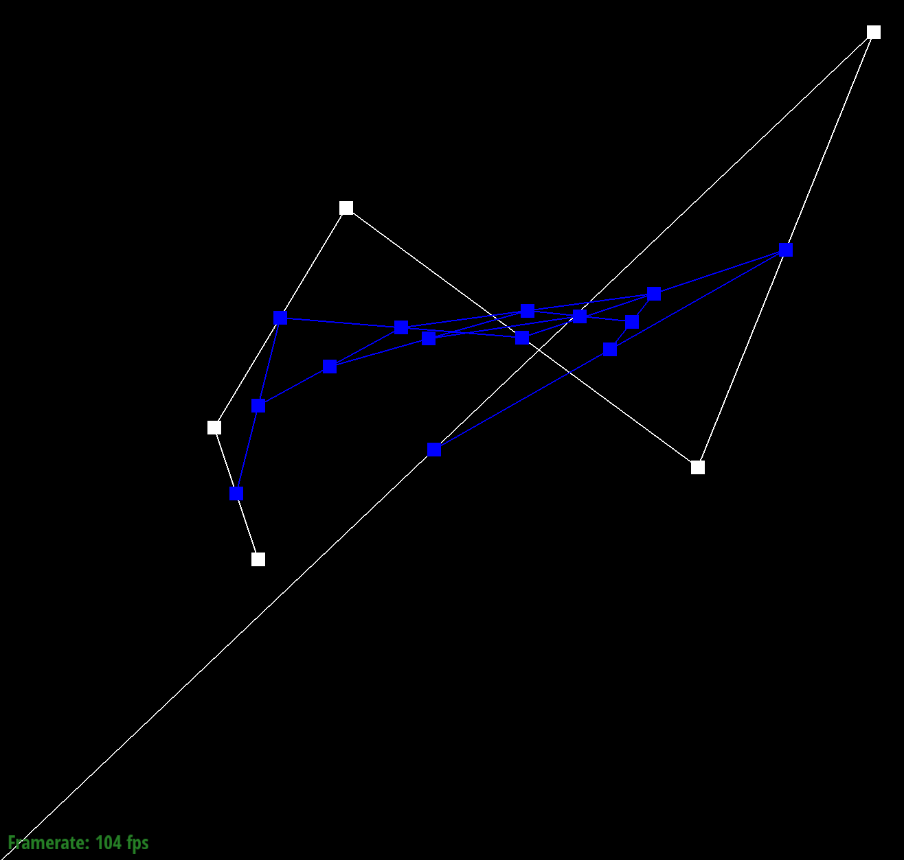
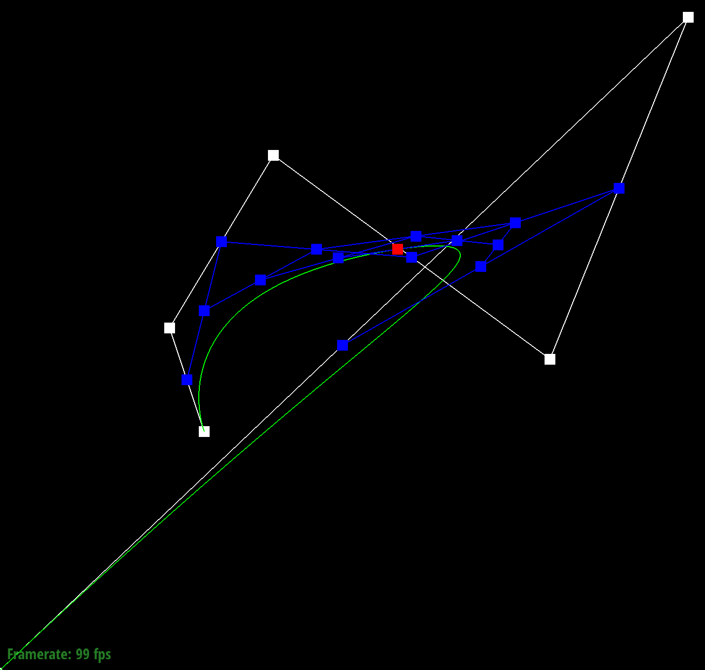
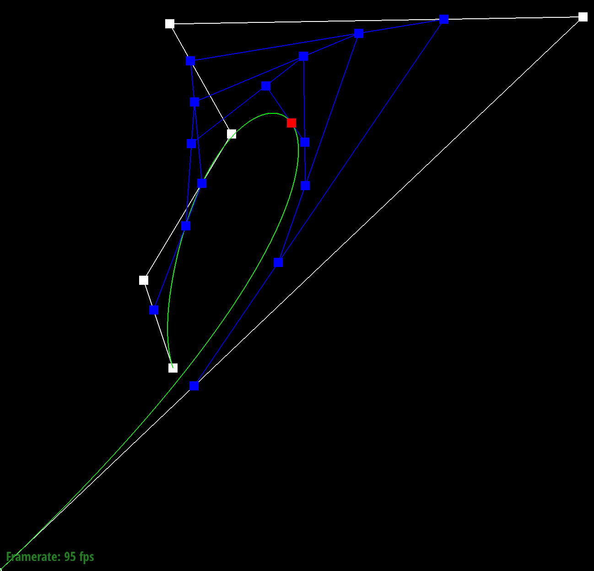
Part 2: Bezier surfaces with separable 1D de Casteljau
De Casteljau's algorithm extends to 2D Bezier surfaces via a technique known as separable 1D de Casteljau. A Bezier surface is defined by an $n \times m$ grid of control points, and parameterized by two variables, $u$ and $v$. Instead of computing a 2D interpolation directly, we apply the 1D algorithm in two orthogonal passes. First, we treat each row of the grid as an independent 1D Bezier curve and fully evaluate it with the parameter $u$. The $n \times m$ grid now becomes a single column of $n$ points. We treat this resulting column of $n$ points as the control points for a final 1D Bezier curve, evaluating it with the parameter $v$. The final resulting point lies on the 3D Bezier surface.
In my implementation, evaluateStep and evaluate1D handle the 3D vector interpolation in the same way as Part 1. In the main evaluate function, I iterate over every row in controlPoints, call evaluate1D with the parameter $u$, store the resulting points in an array, and call evaluate1D on that array with parameter $v$.
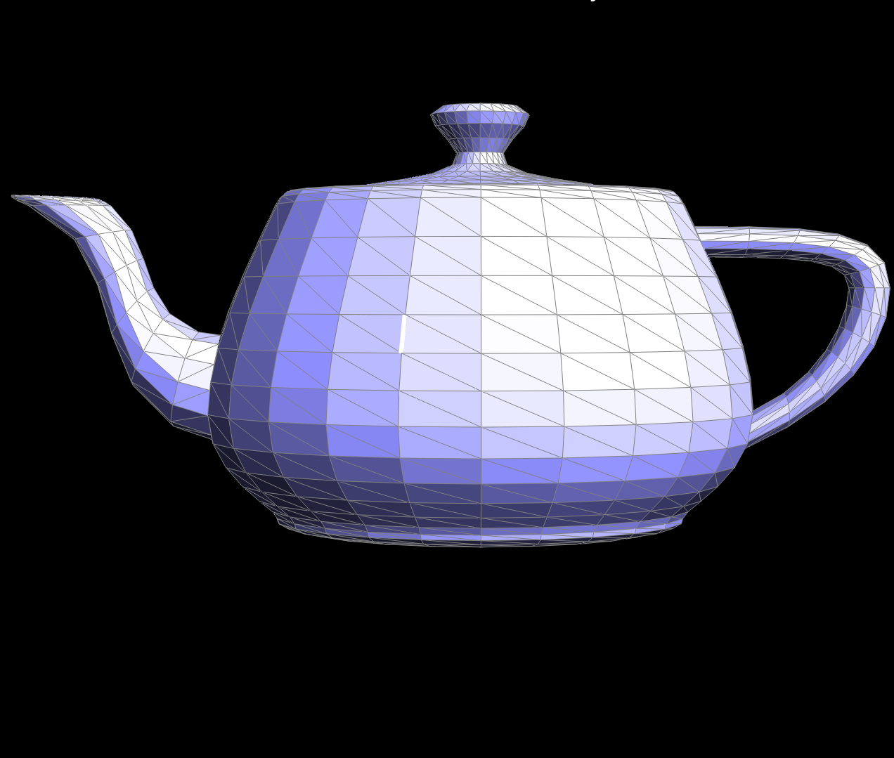
teapot.bez file fully evaluated into a 3D mesh using the separable 1D de Casteljau algorithm.Section II: Triangle Meshes and Half-Edge Data Structure
Part 3: Area-weighted vertex normals
Computing the area-weighted vertex normal for smooth Phong shading necessitates determining the normal of every face incident to the vertex, scaling these normals by the geometric area of their respective faces, summing them, and normalizing the final result. Using the half-edge data structure, I started at the vertex's outgoing half-edge and used a do-while loop (traversing via h->twin()->next()) to iterate around the one-ring neighborhood.
For each non-boundary face, I retrieve the 3D positions of its three vertices. By subtracting the central vertex position from the other two, I generate two edge vectors, $e_1$ and $e_2$. The cross product of these two vectors ($e_1 \times e_2$) conveniently produces a vector orthogonal to the face whose magnitude is exactly twice the area of the triangle. Adding these cross products directly to an accumulator vector inherently weights each face normal by its area. Normalizing the final accumulated vector yields the correct unit normal.

teapot.dae)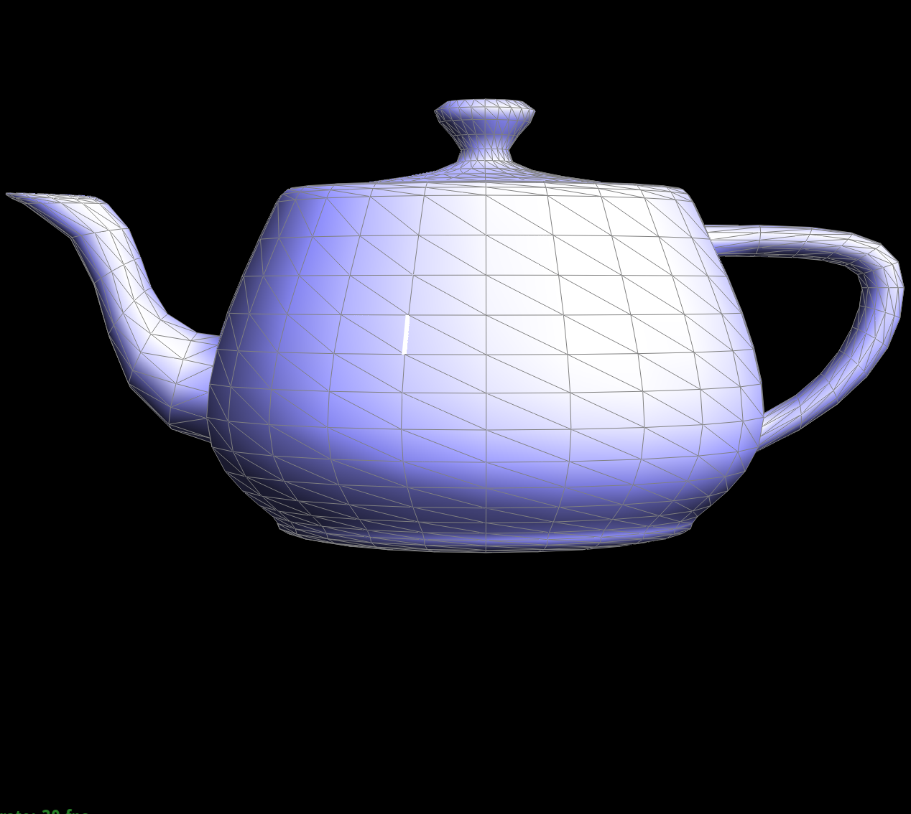
Part 4: Edge flip
An edge flip operation takes an internal edge shared by two triangles and rotates it to connect the opposite two vertices of the resulting quadrilateral. My implementation uses only repetitive pointer reassignment. I began with a diagram of the local neighborhood, labeling all 6 half-edges, 4 vertices, 2 faces, and the central edge. I drew out the resulting flip, noting the reassignments necessary. Inside flipEdge, I store references to all of these elements before I make any modifications.
I use the setNeighbors() method to perform the topological modification, by aggressively reassigning the next, twin, vertex, edge, and face pointers for all 6 inner half-edges. This ensures no pointer is left dangling. Finally, I update the halfedge() pointers for the 4 vertices, 2 faces, and the flipped edge to ensure that they point to valid components within the new configuration.
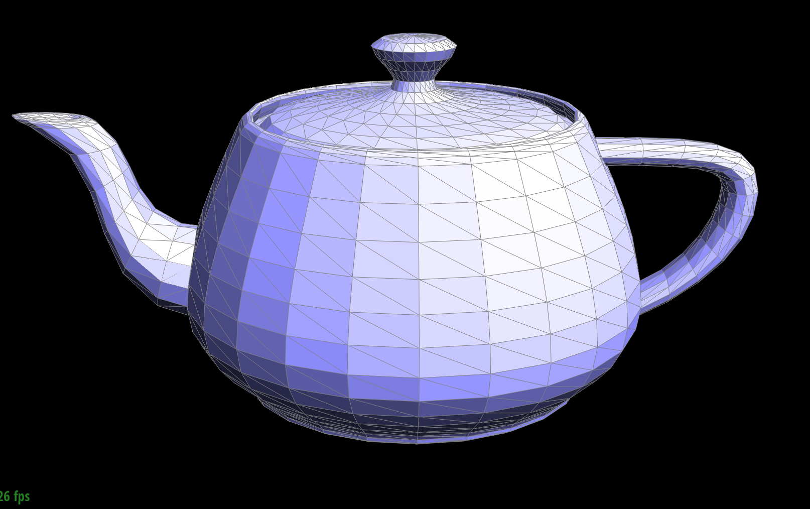
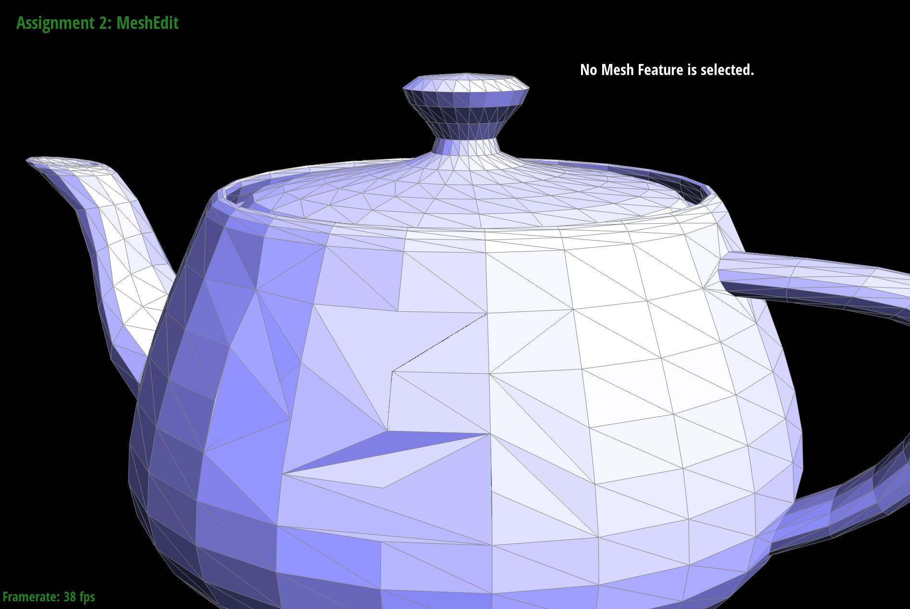
Part 5: Edge split
The edge split operation is much more difficult than the edge flip because it requires allocating new topological memory. Using a standard internal edge, splitting divides two adjacent triangles into four. I allocate 1 new vertex ($m$), 3 new edges, 2 new faces, and 6 new half-edges. I calculated the position of vertex $m$ as the average of the two vertices on the original edge. Similar to Part 4, I used setNeighbors() to route all of the 12 half-edges in the newly formed quad into their correct counter-clockwise sequences, and updated all parent pointers accordingly.
--Extra Credit -- Boundary Edge Splitting: I implemented full support for splitting boundary edges. If e0->isBoundary() is true, a specialized routine runs that only allocates 1 vertex, 2 edges, 1 face, and 4 half-edges. The most difficuly part was maintaining the virtual boundary face; I had to traverse the entire boundary loop to find the `prev` half-edge pointing to the split vertex and link it to the newly-added boundary half-edge.
next pointer of the new boundary half-edge directly back to the original boundary half-edge, making an immediate localized cycle. This froze the program. When understood that the virtual boundary acts as a massive n-gon, I implemented a boundary traversal loop to locate the correct previous half-edge and unfreeze the program.
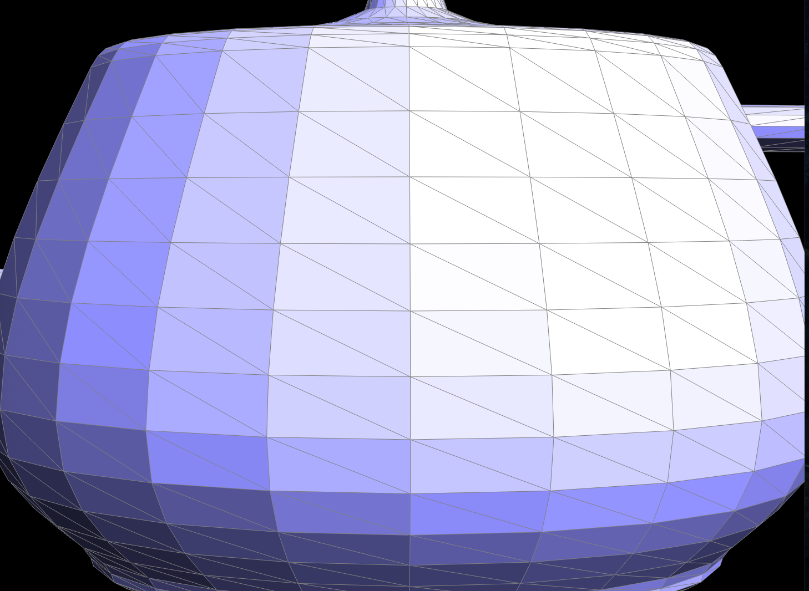
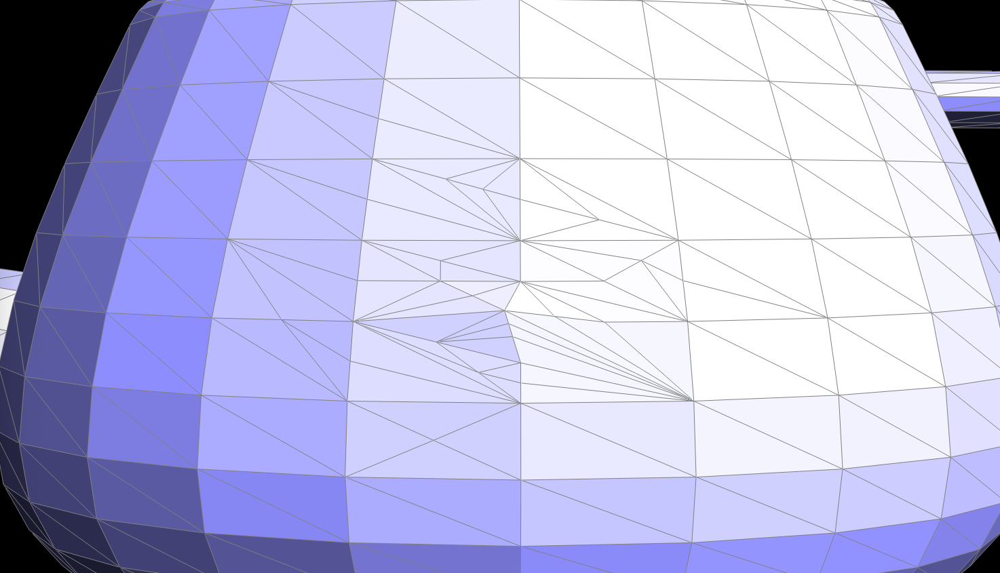
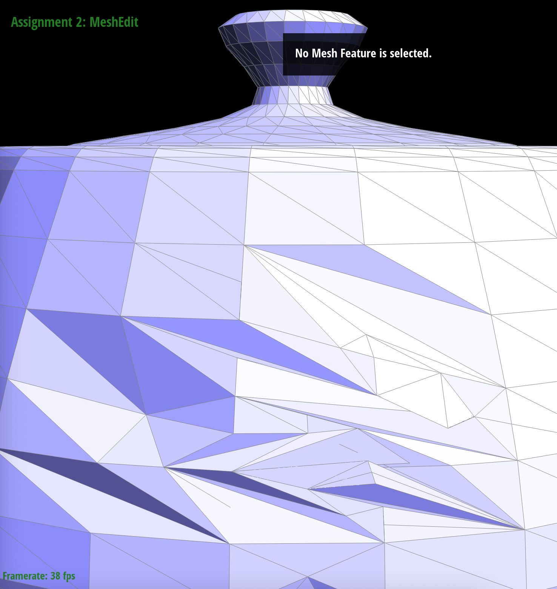
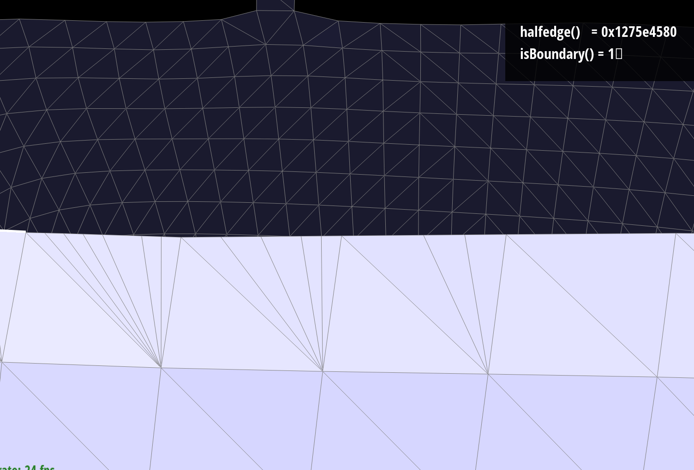
Part 6: Loop subdivision for mesh upsampling
Loop subdivision is a 4-1 approximating subdivision scheme. I implemented it using a three-step pre-computation approach to avoid calculating topological weights on a shifting data structure:
- Pre-computation: Iterated over all original vertices and calculated their updated positions using the Loop weighting rule $(1 - n \times u) \times \text{position} + u \times \text{sum}(\text{neighbors})$. I then calculated the split positions for all original edges using the $3/8$ and $1/8$ weight stencil, storing these in
Edge::newPosition. - Topology Modification: Iterated through a frozen vector of original edges and called
splitEdge()on each. I flagged the returned vertex and the two lateral bisection edges asisNew = true. - Flipping & Updating: Iterated over all edges and flipped *only* the new edges that connect exactly one new vertex to one old (an XOR condition). Finally, I updated all vertex positions to their calculated
newPosition.
splitEdge, the algorithm falsely flags segments as new, resulting in invalid flips that destroy the mesh and cause freezing on the second iteration. I fixed this by saving references to the original endpoints $v_A$ and $v_B$ before the split operation occurred, which ensures that only lateral cross-edges are flipped.
Mesh Behavior Observations: Sharp Corners and Asymmetry
Because Loop subdivision is an approximating scheme, sharp corners and prominent ridges lose their volume and "melt" with each iteration. However, by pre-splitting edges that are around a sharp corner, the local vertex density is artificially increased. Since the Loop scheme only considers the immediate one-ring neighborhood, a crowding of neighbors closely around a corner physically restricts how far inward that corner vertex can be pulled and effectively preserves the sharpness of the edge.
When subdividing the default cube.dae, its geometry warps asymmetrically because the cube's square faces are triangulated by a single diagonal, giving the original corner vertices unequal degrees (some have 3 incident edges, some 4, etc.). Since Loop weights depend on vertex degree ($n$), the corners are pulled at different rates.
To fix this: Pre-process the cube by splitting the diagonal edge on every single face, effetively equalizing the topology so all corners have a symmetrical degree. Subsequent subdivisions now create a perfectly symmetrical sphere.
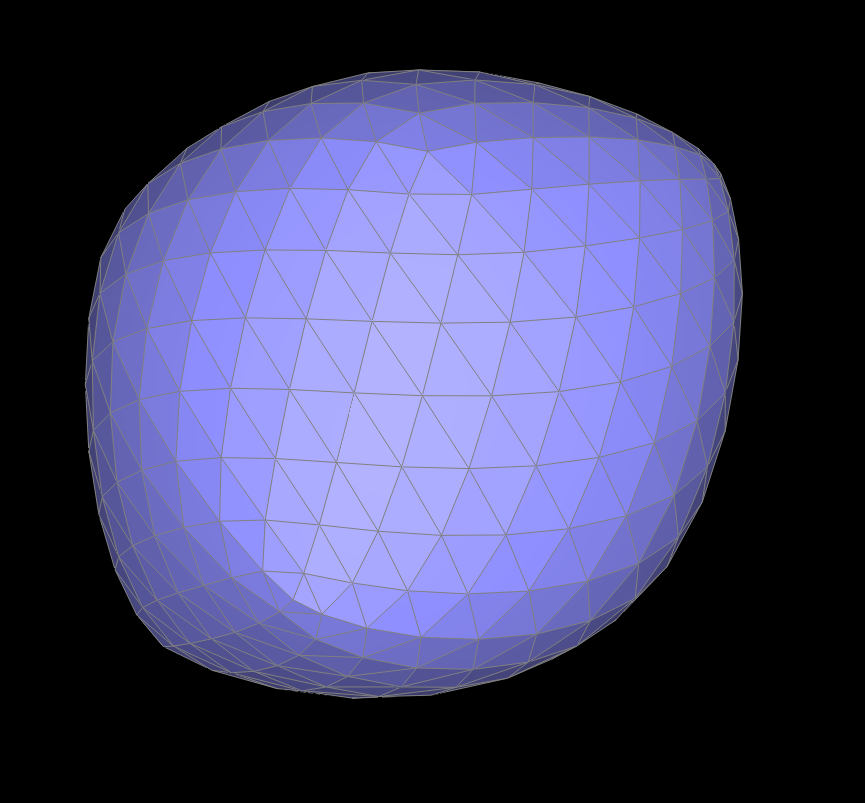
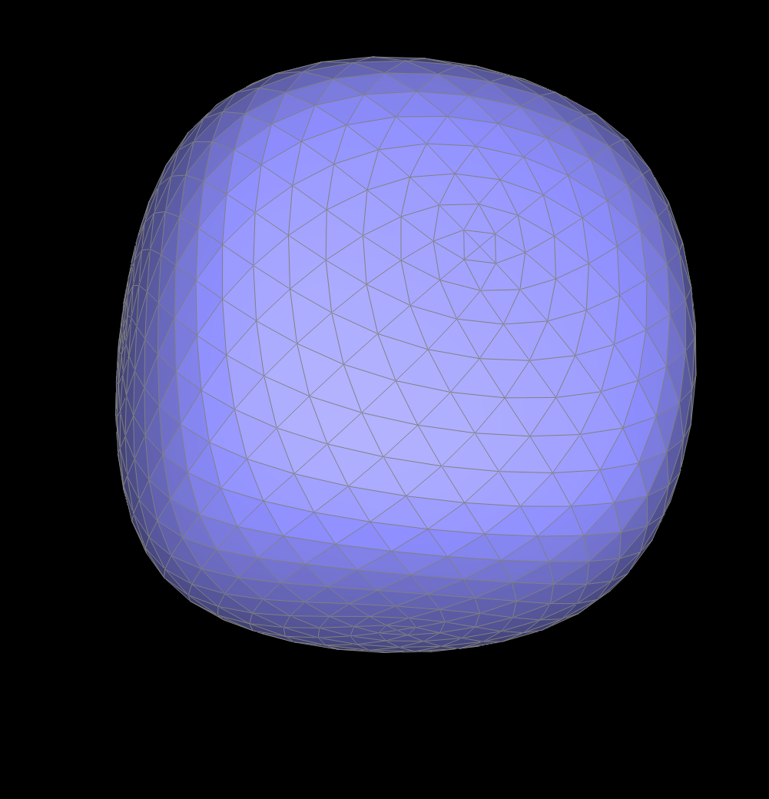
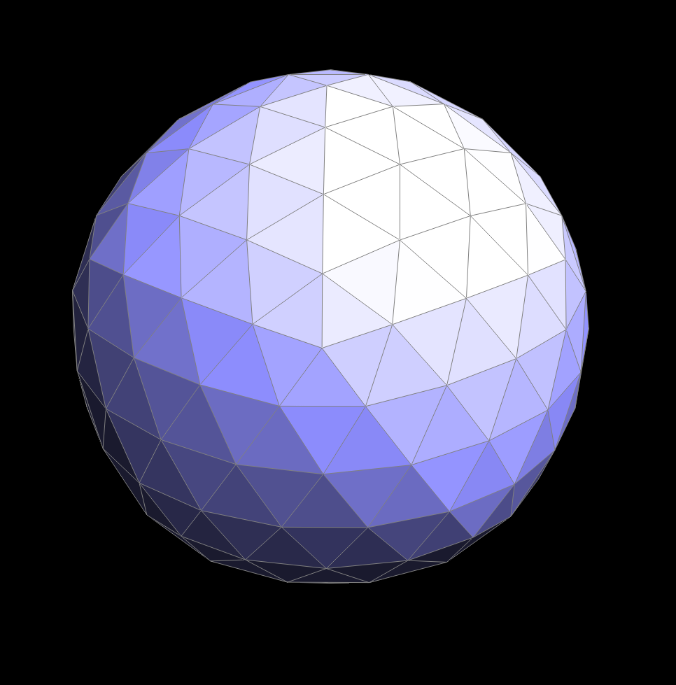
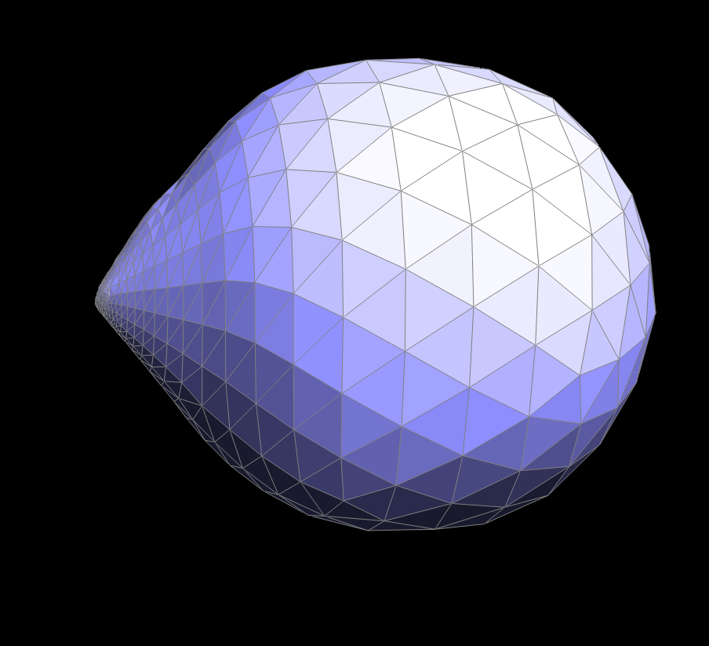
Extra Credit Extensions
1. Boundary Support for Subdivision: I implemented specialized 1D boundary rules for Loop Subdivision. For an old vertex on a boundary, its new position is computed strictly using its two boundary neighbors: $3/4 \times \text{pos} + 1/8 \times \text{left} + 1/8 \times \text{right}$. For new vertices splitting a boundary edge, they are placed exactly at the midpoint: $1/2 \times (A + B)$. Boundary edges are explicitly excluded from the flipping phase.
2. Modified Butterfly Subdivision Scheme: I implemented a toggleable Butterfly scheme. Unlike Loop, Butterfly is an interpolating scheme. Old vertices retain their exact original positions, which preserves the original mesh envelope. I calculated new vertices using a strict 8-point stencil: $1/2 \times (A+B) + 1/8 \times (C+D) - 1/16 \times (E_1+E_2+E_3+E_4)$. Implementing this required safely traversing the half-edges to grab the outer-ring vertices without breaking the strict mathematical requirement of all weights summing to $1.0$.
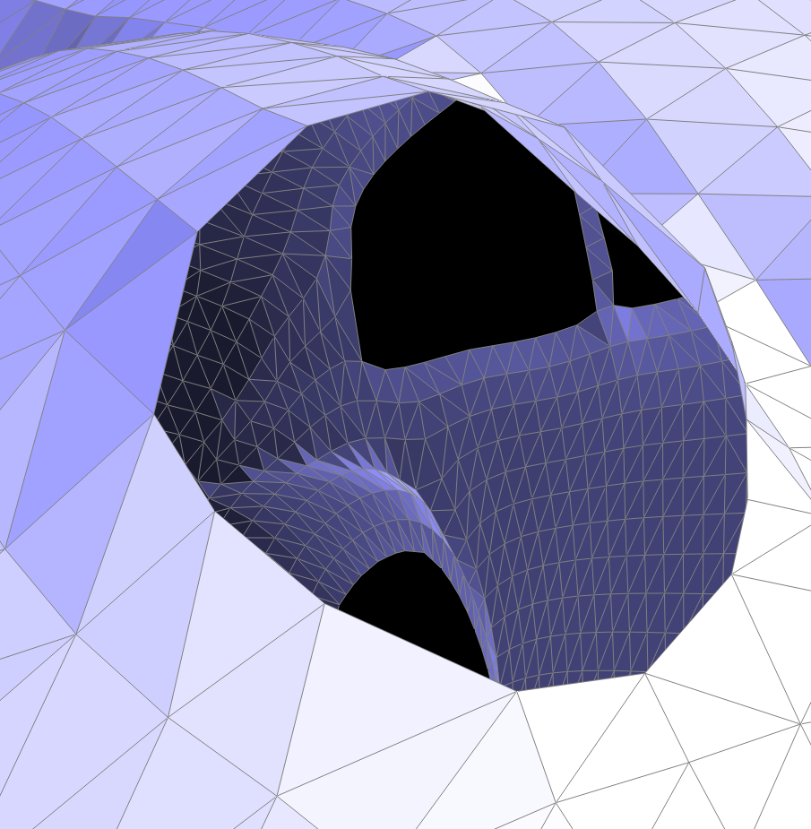
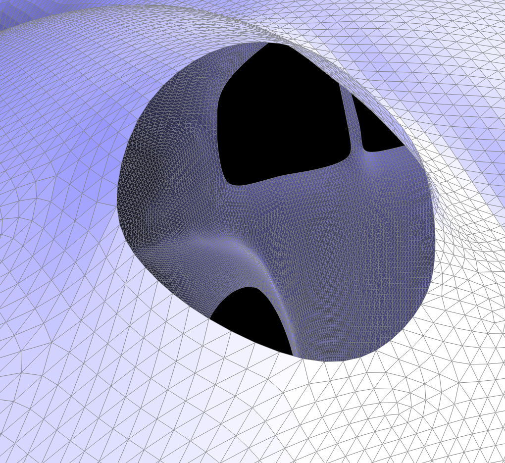
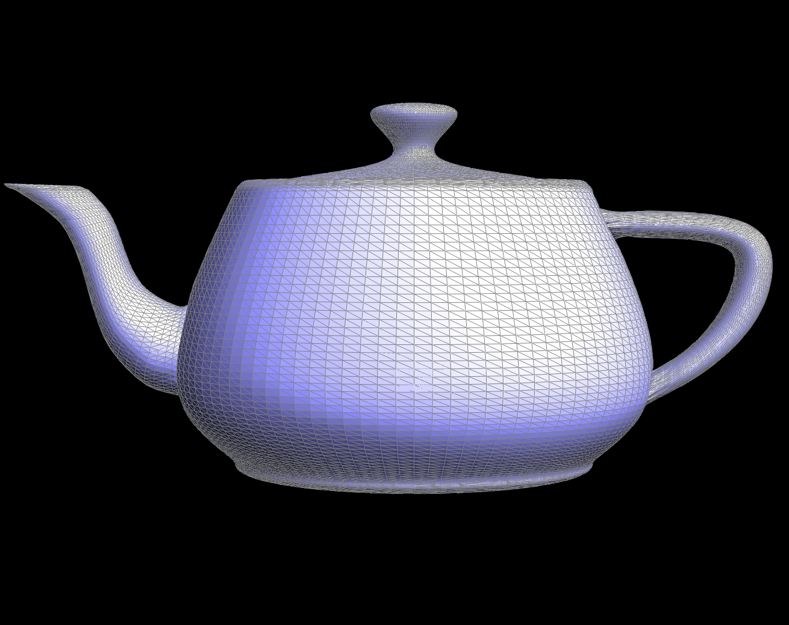